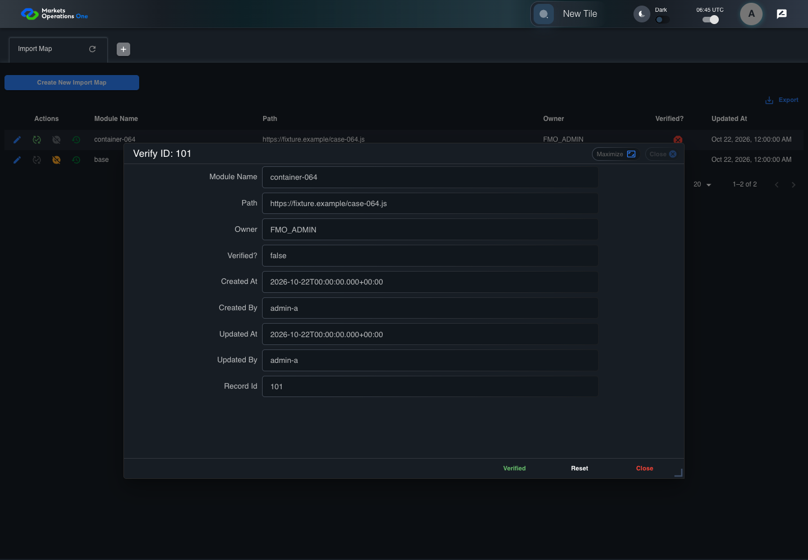
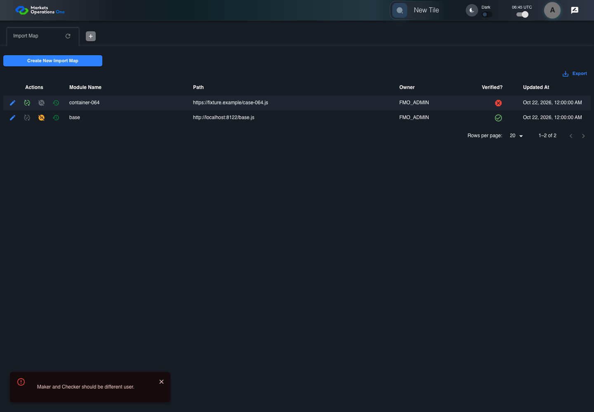
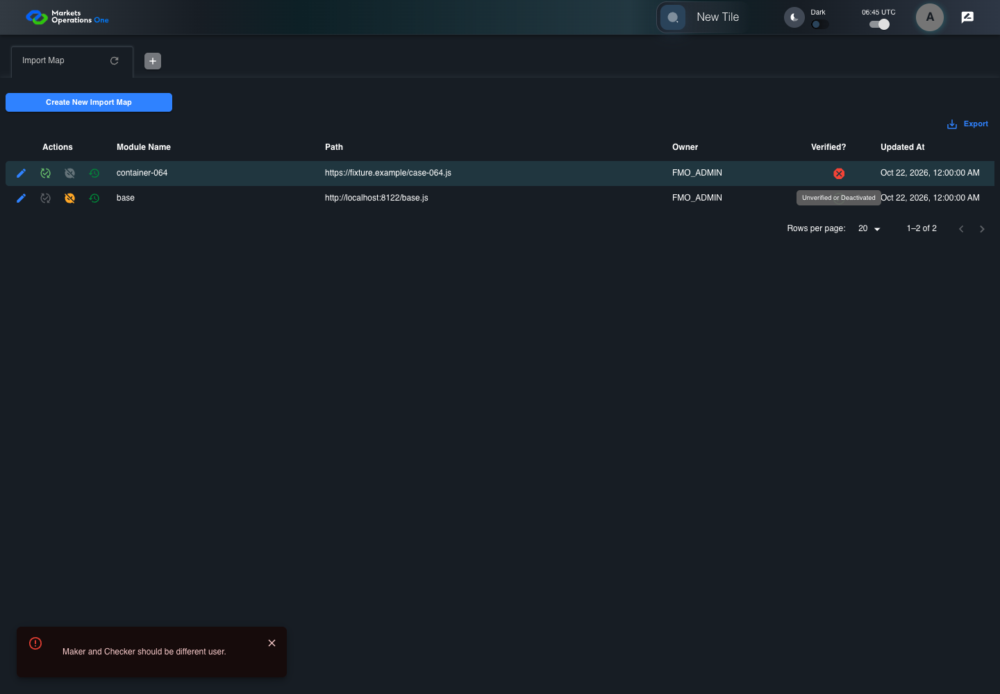
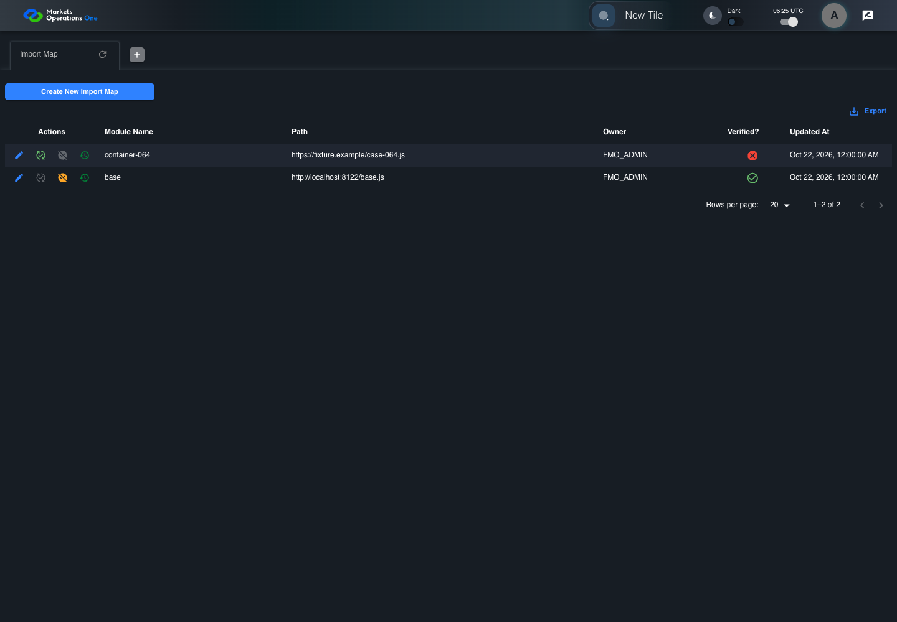
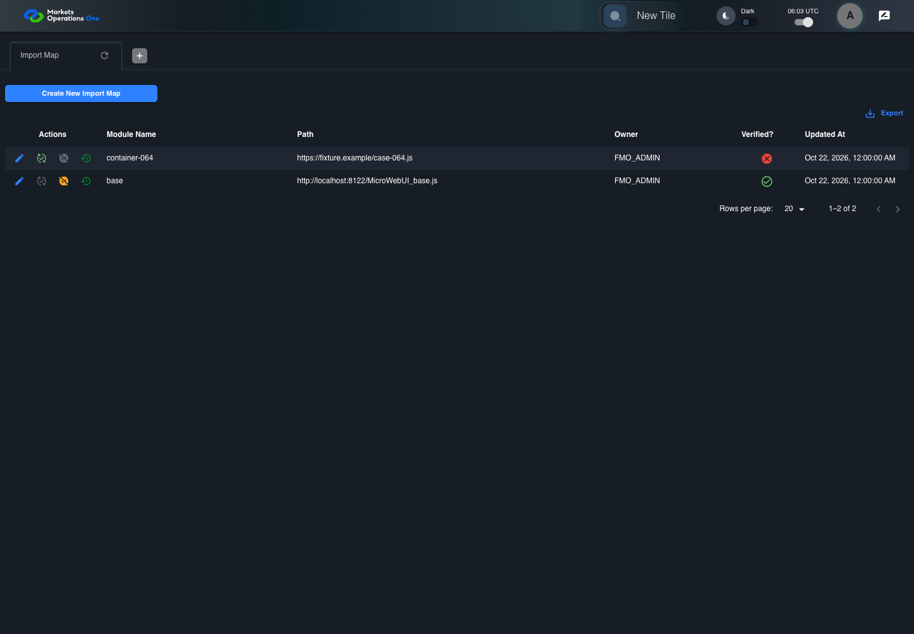
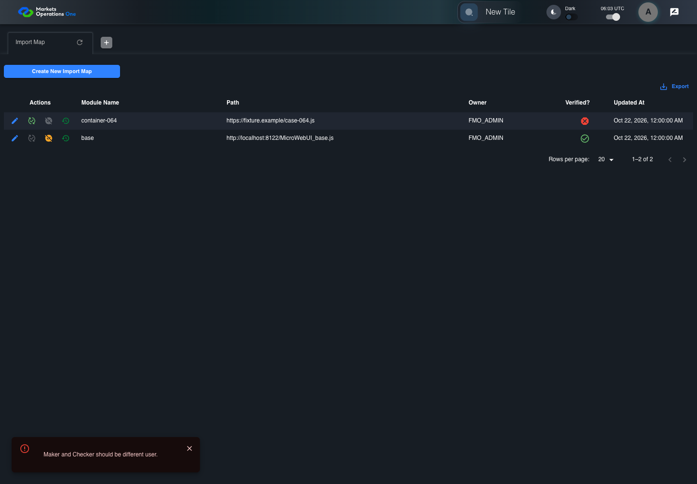
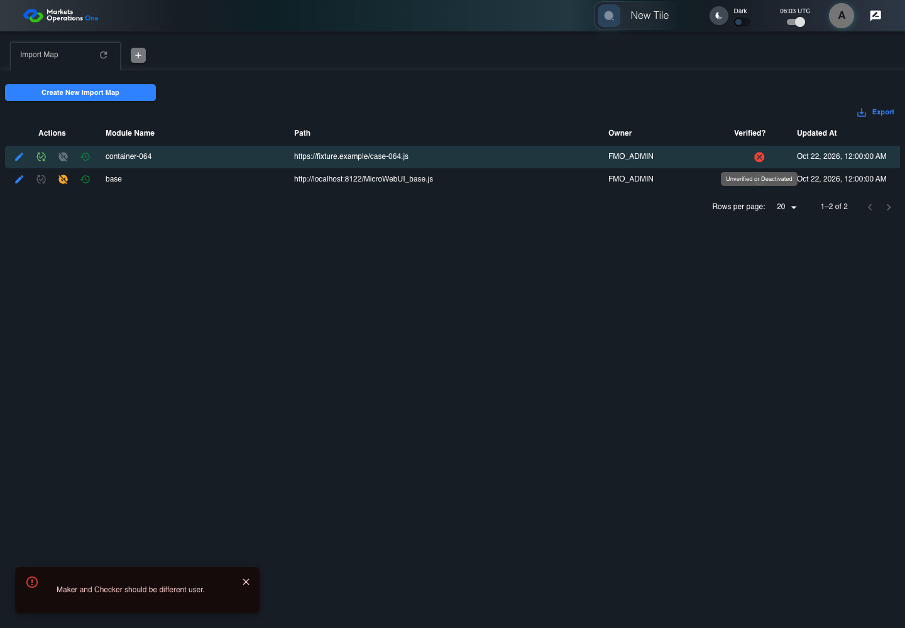

All canonical cases
BFF-ADM-064: Reject self-verification of Import Map Business acceptance remains unverified. Owner: unknown. Review the canonical definition and fixture limits before acceptance.
Latest local result: PASS Business acceptance: NOT_ESTABLISHED.
The latest local result describes execution. The historical definition review assesses the case design before execution.
Latest step screenshot evidence: COMPLETE . 13/13 canonical steps have execution screenshots.
Canonical Gherkin definition . Definition version: 2. SHA-256: 909b3af17f851fdf0ed207e78bdcdf00a7b5764f6cbcfc3ccb1092982dcf2c5a.
Historical definition review (preflight): UNVERIFIED A definition review FAIL can coexist with local PASS. The definition failed preflight quality checks.
This historical review does not change the latest execution result. Resolve definition gaps before business acceptance.
Canonical Gherkin steps Feature: Admin authority
@BFF-ADM-064
Scenario: Reject self-verification of Import Map
Given Admin A uses subject "admin-a" with role "FMO_ADMIN" in an isolated authenticated browser
And the controlled Import Map fixture records the initial grid rows and persisted values
And the Import Map grid has record "101" owned by "FMO_ADMIN"
And the baseline fixture data defines "Module Name" as "container-064"
And the baseline fixture data defines "Path" as "https://fixture.example/case-064.js"
And Import Map record "101" is inactive when this browser loads its grid
And its stored "updatedBy" value is "admin-a"
When Admin A clicks the button labeled "Verify" in the Import Map grid row with "Record Id" "101"
Then the dialog titled "verify ID: 101" is visible on the Import Map administration page
When Admin A clicks the button labeled "Verified" in dialog "verify ID: 101"
Then the alert with severity "error" in the portal snackbar contains the exact text "Maker and Checker should be different user."
And in the Import Map data grid with column "Record Id", the "Verified?" cell for Import Map record "101" has status tooltip "Unverified or Deactivated" on the Import Map administration page
And the persisted-record readback for record "101" has "active" equal to false Acceptance and evidence limits: NO_COMPLETE_REAL_APPLICATION_BINDING, CANONICAL_REVIEW_OR_EVIDENCE_UNRESOLVED.
Planned essential canonical frames: 3. Plan completeness requires separate review.
Latest attempt BFF-ADM-064 current BFF administration through actual UI PASS · application/run-072/bff-adm-064-current-bff-administration-through-actual-ui-96b8fb632466-attempt-1 · ACTUAL_APPLICATION_LOCAL_SERVICES
Actual current React and exact-current BFF admin controllers/services/JPA with actual migration DDL in disposable PostgreSQL. Controlled OUD/EMS2 identities and local Spring bootstrap. Fixture SQL seeds/mutates isolated records; service errors are actual database errors. Undefined agreed messages remain unresolved acceptance.
2026-10-22T06:45:40.220Z to 2026-10-22T06:45:46.245Z
Assertions and result · Artifact manifest · Exact run inputs and source hashes
Result SHA-256: ffb34309679d0d3dcb59aef16e99776f7e789b2602ec312d119a33485c01c348 Playwright trace
Machine observations Screenshot capture: CAPTURED. Named frames: 14.
Step screenshot evidence: COMPLETE. 13/13 canonical steps have execution screenshots.
Canonical step timeline Given Admin A uses subject "admin-a" with role "FMO_ADMIN" in an isolated authenticated browser
1. step-01 Visible state after step 1: Given Admin A uses subject "admin-a" with role "FMO_ADMIN" in an isolated authenticated browser
2026-10-22T06:45:44.314Z · 1440×1000148b8d789d7a73c39a617379fde97eb08699bbd5a3e51c89c5e6ad58f07c2fba And the controlled Import Map fixture records the initial grid rows and persisted values
2. step-02 Visible state after step 2: And the controlled Import Map fixture records the initial grid rows and persisted values
2026-10-22T06:45:44.458Z · 1440×1000148b8d789d7a73c39a617379fde97eb08699bbd5a3e51c89c5e6ad58f07c2fba And the Import Map grid has record "101" owned by "FMO_ADMIN"
3. step-03 Visible state after step 3: And the Import Map grid has record "101" owned by "FMO_ADMIN"
2026-10-22T06:45:44.506Z · 1440×1000148b8d789d7a73c39a617379fde97eb08699bbd5a3e51c89c5e6ad58f07c2fba And the baseline fixture data defines "Module Name" as "container-064"
4. step-04 Visible state after step 4: And the baseline fixture data defines "Module Name" as "container-064"
2026-10-22T06:45:44.579Z · 1440×1000148b8d789d7a73c39a617379fde97eb08699bbd5a3e51c89c5e6ad58f07c2fba And the baseline fixture data defines "Path" as "https://fixture.example/case-064.js"
5. step-05 Visible state after step 5: And the baseline fixture data defines "Path" as "https://fixture.example/case-064.js"
2026-10-22T06:45:44.661Z · 1440×1000148b8d789d7a73c39a617379fde97eb08699bbd5a3e51c89c5e6ad58f07c2fba And Import Map record "101" is inactive when this browser loads its grid
6. step-06 Visible state after step 6: And Import Map record "101" is inactive when this browser loads its grid
2026-10-22T06:45:44.711Z · 1440×1000148b8d789d7a73c39a617379fde97eb08699bbd5a3e51c89c5e6ad58f07c2fba And its stored "updatedBy" value is "admin-a"
7. step-07 Visible state after step 7: And its stored "updatedBy" value is "admin-a"
2026-10-22T06:45:44.783Z · 1440×1000148b8d789d7a73c39a617379fde97eb08699bbd5a3e51c89c5e6ad58f07c2fba When Admin A clicks the button labeled "Verify" in the Import Map grid row with "Record Id" "101"

8. step-08 Visible state after step 8: When Admin A clicks the button labeled "Verify" in the Import Map grid row with "Record Id" "101"
2026-10-22T06:45:45.035Z · 1440×10002e36db6aceb325c142c56d5354ebba0c2741a22d3fa2de8e048c8bd9458ba70b Then the dialog titled "verify ID: 101" is visible on the Import Map administration page
9. step-09 Visible state after step 9: Then the dialog titled "verify ID: 101" is visible on the Import Map administration page
2026-10-22T06:45:45.120Z · 1440×10001fc8eda8e2dcee9b82f45d4cef9ae9b8698ab541def70b5922971e442dd02ef4 When Admin A clicks the button labeled "Verified" in dialog "verify ID: 101"
10. step-10 Visible state after step 10: When Admin A clicks the button labeled "Verified" in dialog "verify ID: 101"
2026-10-22T06:45:45.342Z · 1440×1000978532629bf767086924f98f3f91c7c8abf75659b209b8f0cf0b88e8d72d8d07 Then the alert with severity "error" in the portal snackbar contains the exact text "Maker and Checker should be different user."

11. step-11 Visible state after step 11: Then the alert with severity "error" in the portal snackbar contains the exact text "Maker and Checker should be different user."
2026-10-22T06:45:45.411Z · 1440×1000978532629bf767086924f98f3f91c7c8abf75659b209b8f0cf0b88e8d72d8d07 And in the Import Map data grid with column "Record Id", the "Verified?" cell for Import Map record "101" has status tooltip "Unverified or Deactivated" on the Import Map administration page

12. step-12 Visible state after step 12: And in the Import Map data grid with column "Record Id", the "Verified?" cell for Import Map record "101" has status tooltip "Unverified or Deactivated" on the Import Map administration page
2026-10-22T06:45:45.742Z · 1440×1000f4c144cd76211f45c611d8d1da298598820ce2a9c73177bbfec3a222b6024c22 And the persisted-record readback for record "101" has "active" equal to false
13. step-13 Visible state after step 13: And the persisted-record readback for record "101" has "active" equal to false
2026-10-22T06:45:45.791Z · 1440×1000f4c144cd76211f45c611d8d1da298598820ce2a9c73177bbfec3a222b6024c22 Additional named frames 14. final-result The final visible state after the named test assertions.
2026-10-22T06:45:45.894Z · 1440×1000f4c144cd76211f45c611d8d1da298598820ce2a9c73177bbfec3a222b6024c22 Screenshots establish visible state only. Assertions and traces support functional claims.
Earlier attempt history (2) Earlier attempt PASS (superseded by latest PASS) BFF-ADM-064 current BFF administration through actual UI PASS · application/run-066/bff-adm-064-current-bff-administration-through-actual-ui-96b8fb632466-attempt-1 · ACTUAL_APPLICATION_LOCAL_SERVICES
Actual current React and exact-current BFF admin controllers/services/JPA with actual migration DDL in disposable PostgreSQL. Controlled OUD/EMS2 identities and local Spring bootstrap. Fixture SQL seeds/mutates isolated records; service errors are actual database errors. Undefined agreed messages remain unresolved acceptance.
2026-10-22T06:25:14.339Z to 2026-10-22T06:25:18.894Z
Assertions and result · Artifact manifest · Exact run inputs and source hashes
Result SHA-256: e79bfe5c4e7c5aca4c396627b1b745e429f636ea8f7fe0d5b8c9b6c6d6a008da Playwright trace
Machine observations Screenshot capture: CAPTURED. Named frames: 14.
Step screenshot evidence: COMPLETE. 13/13 canonical steps have execution screenshots.
Canonical step timeline Given Admin A uses subject "admin-a" with role "FMO_ADMIN" in an isolated authenticated browser

1. step-01 Visible state after step 1: Given Admin A uses subject "admin-a" with role "FMO_ADMIN" in an isolated authenticated browser
2026-10-22T06:25:16.105Z · 1440×1000f14138240e3fe4e470ea0eec7197019175470ee629481085ba0b0c72b1531bb6 And the controlled Import Map fixture records the initial grid rows and persisted values
2. step-02 Visible state after step 2: And the controlled Import Map fixture records the initial grid rows and persisted values
2026-10-22T06:25:16.238Z · 1440×1000f14138240e3fe4e470ea0eec7197019175470ee629481085ba0b0c72b1531bb6 And the Import Map grid has record "101" owned by "FMO_ADMIN"
3. step-03 Visible state after step 3: And the Import Map grid has record "101" owned by "FMO_ADMIN"
2026-10-22T06:25:16.290Z · 1440×1000f14138240e3fe4e470ea0eec7197019175470ee629481085ba0b0c72b1531bb6 And the baseline fixture data defines "Module Name" as "container-064"
4. step-04 Visible state after step 4: And the baseline fixture data defines "Module Name" as "container-064"
2026-10-22T06:25:16.344Z · 1440×1000f14138240e3fe4e470ea0eec7197019175470ee629481085ba0b0c72b1531bb6 And the baseline fixture data defines "Path" as "https://fixture.example/case-064.js"
5. step-05 Visible state after step 5: And the baseline fixture data defines "Path" as "https://fixture.example/case-064.js"
2026-10-22T06:25:16.444Z · 1440×1000f14138240e3fe4e470ea0eec7197019175470ee629481085ba0b0c72b1531bb6 And Import Map record "101" is inactive when this browser loads its grid
6. step-06 Visible state after step 6: And Import Map record "101" is inactive when this browser loads its grid
2026-10-22T06:25:16.494Z · 1440×1000f14138240e3fe4e470ea0eec7197019175470ee629481085ba0b0c72b1531bb6 And its stored "updatedBy" value is "admin-a"
7. step-07 Visible state after step 7: And its stored "updatedBy" value is "admin-a"
2026-10-22T06:25:16.548Z · 1440×1000f14138240e3fe4e470ea0eec7197019175470ee629481085ba0b0c72b1531bb6 When Admin A clicks the button labeled "Verify" in the Import Map grid row with "Record Id" "101"
8. step-08 Visible state after step 8: When Admin A clicks the button labeled "Verify" in the Import Map grid row with "Record Id" "101"
2026-10-22T06:25:16.884Z · 1440×1000b29ba738b2a4a9f92a2e0abf3178cfeac7543498a4d5e7f1d9ad91e20d460f5f Then the dialog titled "verify ID: 101" is visible on the Import Map administration page
9. step-09 Visible state after step 9: Then the dialog titled "verify ID: 101" is visible on the Import Map administration page
2026-10-22T06:25:17.047Z · 1440×1000224dcf025e3cc14adee24ad19f5c604f32a0506825ebecc223ee1e58e5d556a0 When Admin A clicks the button labeled "Verified" in dialog "verify ID: 101"
10. step-10 Visible state after step 10: When Admin A clicks the button labeled "Verified" in dialog "verify ID: 101"
2026-10-22T06:25:17.367Z · 1440×1000635dd095f0bcfa7691207ba113b9c74210c03a9ced78d8ef9eb6f502ee8fbaeb Then the alert with severity "error" in the portal snackbar contains the exact text "Maker and Checker should be different user."
11. step-11 Visible state after step 11: Then the alert with severity "error" in the portal snackbar contains the exact text "Maker and Checker should be different user."
2026-10-22T06:25:17.461Z · 1440×1000635dd095f0bcfa7691207ba113b9c74210c03a9ced78d8ef9eb6f502ee8fbaeb And in the Import Map data grid with column "Record Id", the "Verified?" cell for Import Map record "101" has status tooltip "Unverified or Deactivated" on the Import Map administration page
12. step-12 Visible state after step 12: And in the Import Map data grid with column "Record Id", the "Verified?" cell for Import Map record "101" has status tooltip "Unverified or Deactivated" on the Import Map administration page
2026-10-22T06:25:17.818Z · 1440×100067887ad72e164ff372528f71f606dec5a9d86570ff17eb011c36d48cc4bda2b4 And the persisted-record readback for record "101" has "active" equal to false
13. step-13 Visible state after step 13: And the persisted-record readback for record "101" has "active" equal to false
2026-10-22T06:25:17.925Z · 1440×100067887ad72e164ff372528f71f606dec5a9d86570ff17eb011c36d48cc4bda2b4 Additional named frames 14. final-result The final visible state after the named test assertions.
2026-10-22T06:25:18.148Z · 1440×100067887ad72e164ff372528f71f606dec5a9d86570ff17eb011c36d48cc4bda2b4 Screenshots establish visible state only. Assertions and traces support functional claims.
Earlier attempt PASS (superseded by latest PASS) BFF-ADM-064 current BFF administration through actual UI PASS · application/run-062/bff-adm-064-current-bff-administration-through-actual-ui-96b8fb632466-attempt-1 · ACTUAL_APPLICATION_LOCAL_SERVICES
Actual current React and exact-current BFF admin controllers/services/JPA with actual migration DDL in disposable PostgreSQL. Controlled OUD/EMS2 identities and local Spring bootstrap. Fixture SQL seeds/mutates isolated records; service errors are actual database errors. Undefined agreed messages remain unresolved acceptance.
2026-10-22T06:03:32.311Z to 2026-10-22T06:03:38.016Z
Assertions and result · Artifact manifest · Exact run inputs and source hashes
Result SHA-256: 583bee2f5a231a8c96380342e7555103e0cc584aba1270061a79d14c4f355245 Playwright trace
Machine observations Screenshot capture: CAPTURED. Named frames: 14.
Step screenshot evidence: COMPLETE. 13/13 canonical steps have execution screenshots.
Canonical step timeline Given Admin A uses subject "admin-a" with role "FMO_ADMIN" in an isolated authenticated browser

1. step-01 Visible state after step 1: Given Admin A uses subject "admin-a" with role "FMO_ADMIN" in an isolated authenticated browser
2026-10-22T06:03:35.471Z · 1440×1000a0b258c0930359bd52c14a1375c2fdcdb25725f9532d644809a194383862bab6 And the controlled Import Map fixture records the initial grid rows and persisted values
2. step-02 Visible state after step 2: And the controlled Import Map fixture records the initial grid rows and persisted values
2026-10-22T06:03:35.642Z · 1440×1000a0b258c0930359bd52c14a1375c2fdcdb25725f9532d644809a194383862bab6 And the Import Map grid has record "101" owned by "FMO_ADMIN"
3. step-03 Visible state after step 3: And the Import Map grid has record "101" owned by "FMO_ADMIN"
2026-10-22T06:03:35.760Z · 1440×1000a0b258c0930359bd52c14a1375c2fdcdb25725f9532d644809a194383862bab6 And the baseline fixture data defines "Module Name" as "container-064"
4. step-04 Visible state after step 4: And the baseline fixture data defines "Module Name" as "container-064"
2026-10-22T06:03:35.839Z · 1440×1000a0b258c0930359bd52c14a1375c2fdcdb25725f9532d644809a194383862bab6 And the baseline fixture data defines "Path" as "https://fixture.example/case-064.js"
5. step-05 Visible state after step 5: And the baseline fixture data defines "Path" as "https://fixture.example/case-064.js"
2026-10-22T06:03:35.921Z · 1440×1000a0b258c0930359bd52c14a1375c2fdcdb25725f9532d644809a194383862bab6 And Import Map record "101" is inactive when this browser loads its grid
6. step-06 Visible state after step 6: And Import Map record "101" is inactive when this browser loads its grid
2026-10-22T06:03:35.987Z · 1440×1000a0b258c0930359bd52c14a1375c2fdcdb25725f9532d644809a194383862bab6 And its stored "updatedBy" value is "admin-a"
7. step-07 Visible state after step 7: And its stored "updatedBy" value is "admin-a"
2026-10-22T06:03:36.070Z · 1440×1000a0b258c0930359bd52c14a1375c2fdcdb25725f9532d644809a194383862bab6 When Admin A clicks the button labeled "Verify" in the Import Map grid row with "Record Id" "101"
8. step-08 Visible state after step 8: When Admin A clicks the button labeled "Verify" in the Import Map grid row with "Record Id" "101"
2026-10-22T06:03:36.394Z · 1440×1000cd42c41d0f5c7622628ac42baf59c0f9020a4d9d52d22b02178048937b2a71b2 Then the dialog titled "verify ID: 101" is visible on the Import Map administration page
9. step-09 Visible state after step 9: Then the dialog titled "verify ID: 101" is visible on the Import Map administration page
2026-10-22T06:03:36.553Z · 1440×10007441dfa4157951c48367acb4ff049275ba7698a519c200ef81d9403a30675a8a When Admin A clicks the button labeled "Verified" in dialog "verify ID: 101"

10. step-10 Visible state after step 10: When Admin A clicks the button labeled "Verified" in dialog "verify ID: 101"
2026-10-22T06:03:36.872Z · 1440×10005f36df4a2b7d11e3bad98c1f63906dc519241a09e013de237b2fa54212148de2 Then the alert with severity "error" in the portal snackbar contains the exact text "Maker and Checker should be different user."
11. step-11 Visible state after step 11: Then the alert with severity "error" in the portal snackbar contains the exact text "Maker and Checker should be different user."
2026-10-22T06:03:36.956Z · 1440×10005f36df4a2b7d11e3bad98c1f63906dc519241a09e013de237b2fa54212148de2 And in the Import Map data grid with column "Record Id", the "Verified?" cell for Import Map record "101" has status tooltip "Unverified or Deactivated" on the Import Map administration page

12. step-12 Visible state after step 12: And in the Import Map data grid with column "Record Id", the "Verified?" cell for Import Map record "101" has status tooltip "Unverified or Deactivated" on the Import Map administration page
2026-10-22T06:03:37.334Z · 1440×1000fa904fe45f5f893cb29475748db71b86f681eecf8f02da59e068d073c66d3c34 And the persisted-record readback for record "101" has "active" equal to false
13. step-13 Visible state after step 13: And the persisted-record readback for record "101" has "active" equal to false
2026-10-22T06:03:37.418Z · 1440×1000fa904fe45f5f893cb29475748db71b86f681eecf8f02da59e068d073c66d3c34 Additional named frames 14. final-result The final visible state after the named test assertions.
2026-10-22T06:03:37.537Z · 1440×1000fa904fe45f5f893cb29475748db71b86f681eecf8f02da59e068d073c66d3c34 Screenshots establish visible state only. Assertions and traces support functional claims.